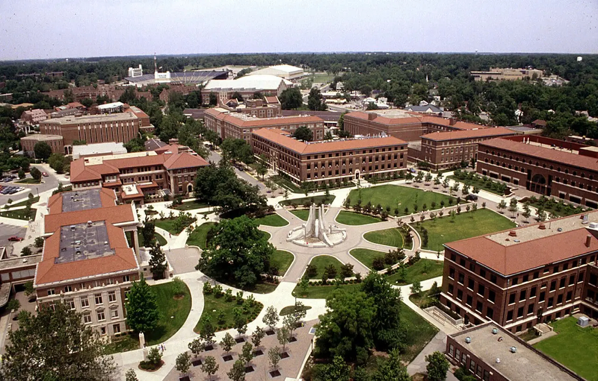
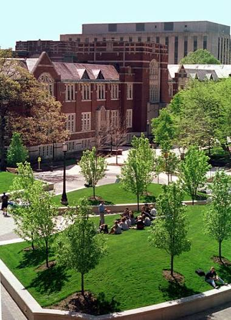
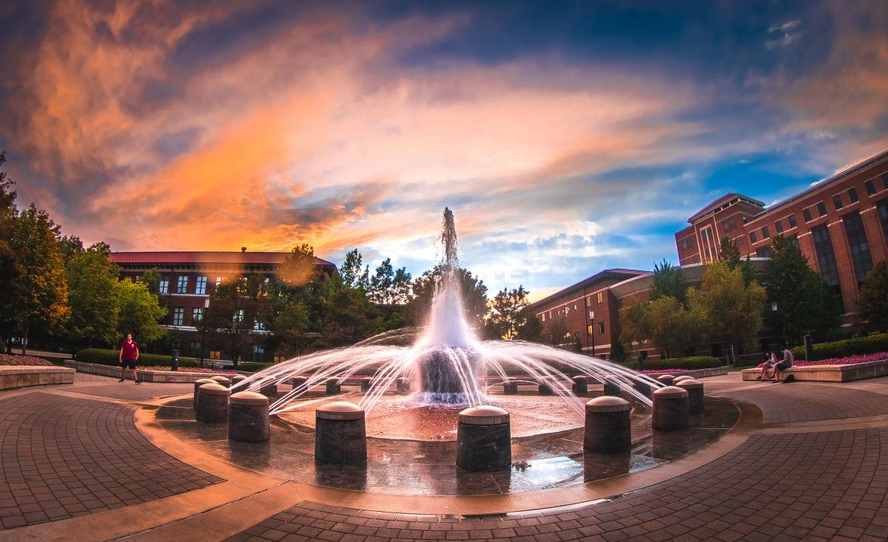
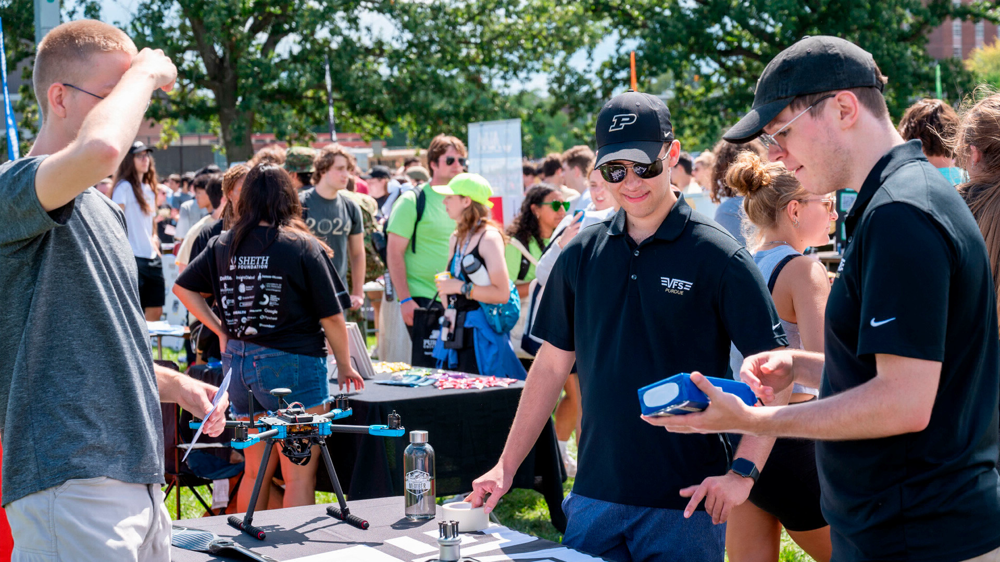
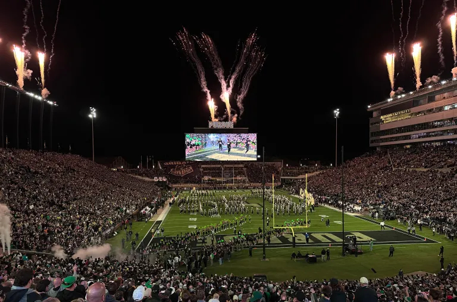

Aerospace
Engineering
Study aircraft and spacecraft through a program grounded in engineering fundamentals, analysis, and design.
Explore program →
WEST LAFAYETTE, INDIANA
Explore a university where discovery, innovation, and opportunity come together to shape what's next.
Explore Purdue →PURDUE UNIVERSITY
Purdue University brings together rigorous academics, research, hands-on learning, and a connected campus community in West Lafayette.

01 / ABOUT PURDUE
Located in West Lafayette, Purdue is a public research university with a long-standing focus on discovery, education, and innovation.
Its campus connects students with classrooms, laboratories, organizations, athletics, and opportunities beyond the classroom.
For students interested in engineering, Purdue's First-Year Engineering experience provides a common foundation before students transition toward professional engineering programs.
Learn more about Purdue →02 / ACADEMICS
Study aircraft and spacecraft through a program grounded in engineering fundamentals, analysis, and design.
Explore program →Build a foundation in mechanics, design, energy, manufacturing, and systems.
Explore program →Explore hardware, software, systems, and the technology connecting the physical and digital worlds.
Explore program →THE PURDUE APPROACH
Purdue engineering students begin with First-Year Engineering coursework and can later transition into professional degree programs. Research, projects, and experiential learning connect classroom ideas with real problems.
03 / LIFE AT PURDUE

CAMPUS
From shared campus traditions to everyday spaces for studying and connecting, student life gives the academic experience a community around it.

COMMUNITY
Discover organizations, activities, and communities that match your interests.

BOILERMAKERS
Experience Purdue traditions and athletics as part of the Boilermaker community.
04 / COST + ADMISSIONS
Purdue has maintained frozen tuition for 14 consecutive years. Students can review tuition, fees, housing, and other estimated costs when planning for college.
View current costs →Purdue reviews applications holistically. Academic preparation, grades, course rigor, intended major, essays, activities, and test scores when provided are considered.
Explore requirements →Purdue offers scholarships, grants, loans, and work-study opportunities. First-year students may also qualify for merit and need-based scholarships.
Explore scholarships →EXPLORE FURTHER
Explore Purdue's academic pathways, including First-Year Engineering and professional engineering programs.
PURDUE UNIVERSITY
Explore the programs, people, and experiences that could shape your Purdue journey.
Explore Purdue ↑